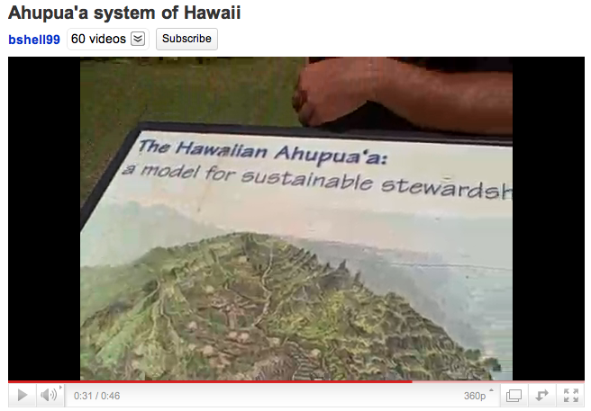

Content Area: Culture and SCIENCE
Standard: The Scientific Process: Nature of Science. Understand that science and cultural practices can be interrelated.
- Objective: Define the Ahupua’a system.
- Objective: Identify popular kalo farming areas, and the environmental features the areas have in common.
1. Define Ahupua’a: A land division extending from the uplands to the sea, given this name because the boundary was marked by a stack (ahu) of stones capped by a sculpted wooden head of a pig (pua’a). This was placed at the time of collection for harvest offerings. The ahupua’a system assured that the community could subsist on shares of food, fish, firewood, timber, etc. From Native Hawaiian Planters, page 48. Bishop Museum Press.
2. View this video, Ahupua‘a system of Hawai‘i. Speaker Kawika Winter, Director, Limahuli Garden and Preserve, explains the Ahupua‘a system. min. 0:45. By bshell99. Link to Youtube.com.
Discuss the necessity of conserving limited food resources in Hawai’i's island environment.

Credit: image from Ahupua‘a system of Hawai‘i posted on Youtube.com.
3. View this video, Waipa Project – Huaka‘i ‘Aina Ho‘oilina. min. 4:41. By Kamehameha Schools. Link to Youtube.com. Stacy Sproat Beck, Director of the Waipa Foundation explains traditional Hawaiian techniques for growing and harvesting food in the Waipa ahupua‘a.
4. Water demands can lead to battles. Read this article, Water Needs For Sustainable Taro Culture in Hawai‘i, by David Penn of the University of Hawai‘i. Link to CTAHR.hawaii.edu. Discuss the challenges farmers face in getting enough water when competing parties also demand water.
5. Use a map or the website Google Earth to locate the places mentioned in the Penn's water article. Study the map to differentiate the various climates where kalo is grown, from cool, elevated upland areas, to low, warmer areas near sea level.
Brainstorm on a whiteboard the geographic qualities that make these places good for farming. Consider the environment in terms of soil nutrients, water flow, climate, etc.
6. View the video, THA Paul Reppun PNTV. min. 1:34. By Mayadorje. Link to Youtube.com. Discuss farmer Paul Reppun’s emphasis on crop rotation and plant variety, 'One of the basic tenets of farming is mix it all up.'
7. View this video of kalo farmer Paul Reppun Hawaii Sierra Club Forces For Good Symposium. min. 9:43, by Memorial Video Tribute. Link to Youtube.com. Name three issues that challenge our local farmers.
8. View this video featuring students from Santa Monica High School about rain water runoff in Los Angeles, Urban Runoff. min. 4:55. By greenobservers and Surfrider Foundation. Link to Youtube.com.
Discuss how our community’s actions on the land affect the water supply and the ocean environment.
9. Organize a field trip and work day to a botanical garden or kalo farm. Please ask the host for their expectations before a field trip.
Read Native Planters, Bishop Museum Press, page 97 – 98. Hawaiians hold great respect for kalo. The book describes traditional Hawaiian prayers and protocols related to kalo farming.